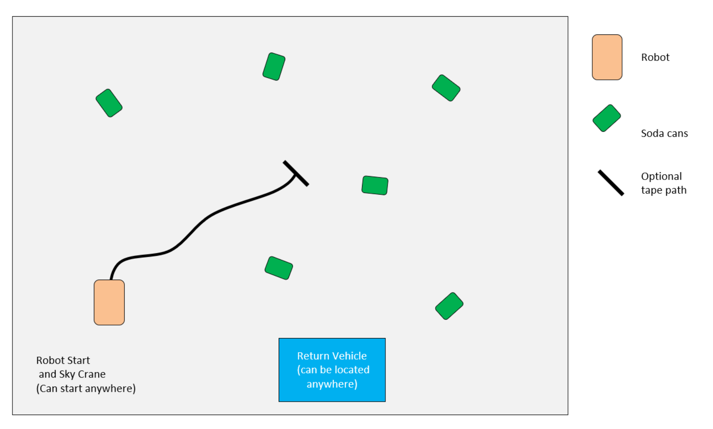
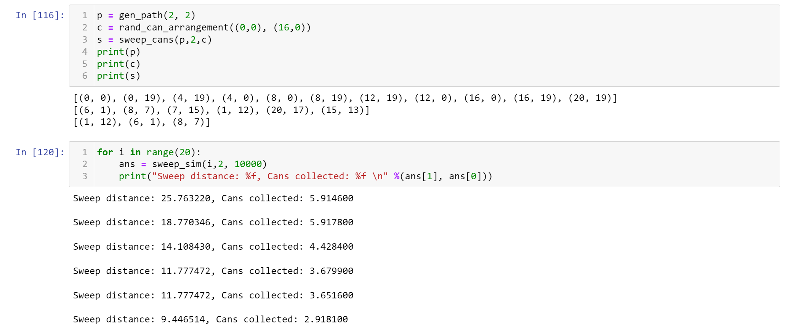
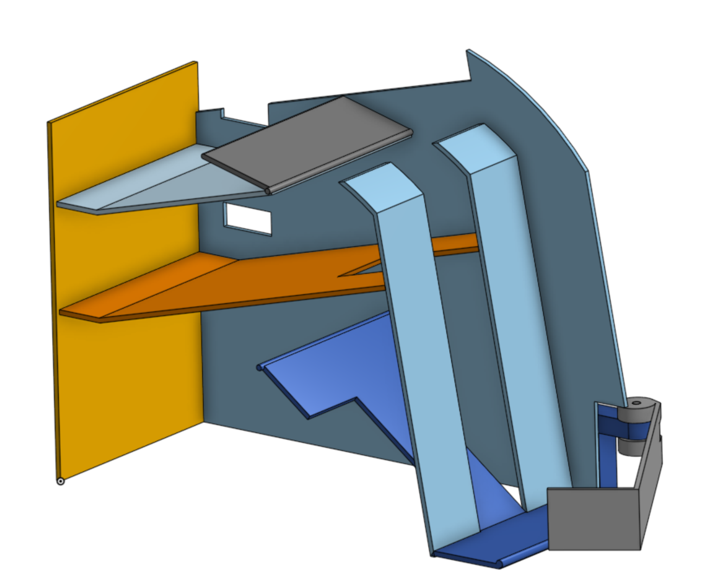
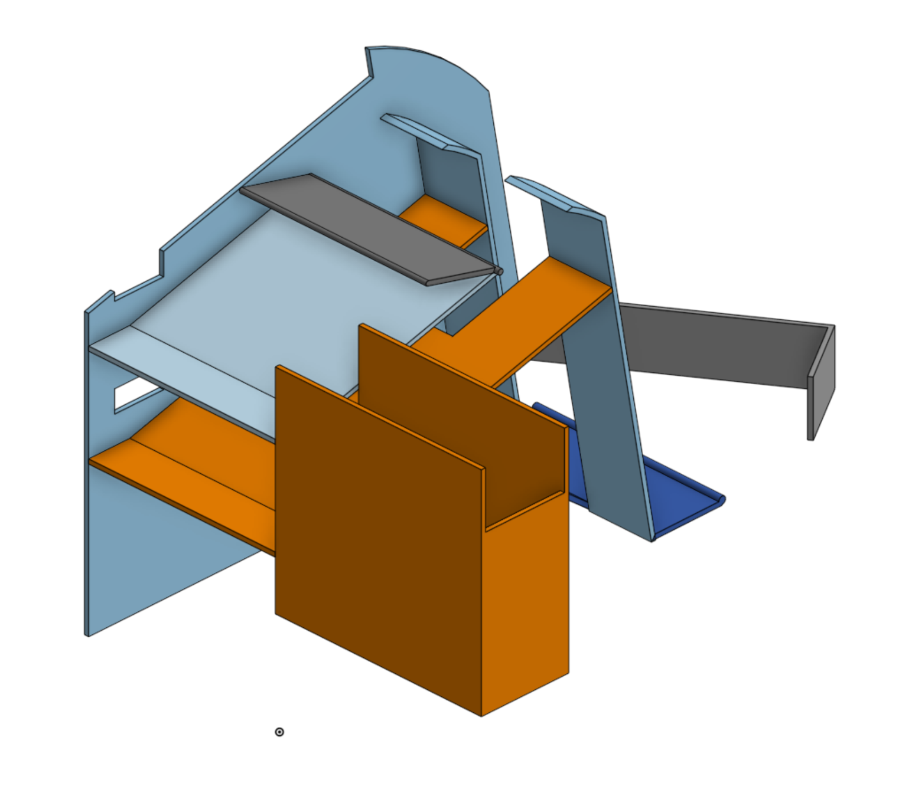
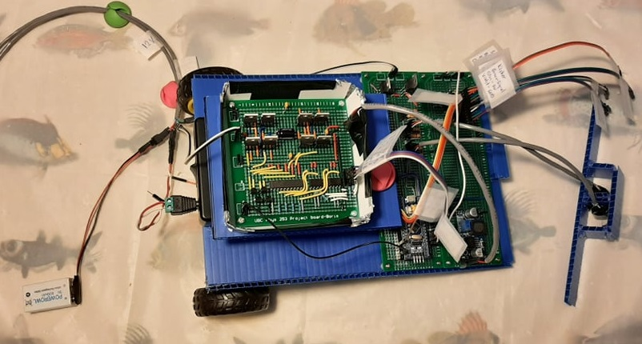
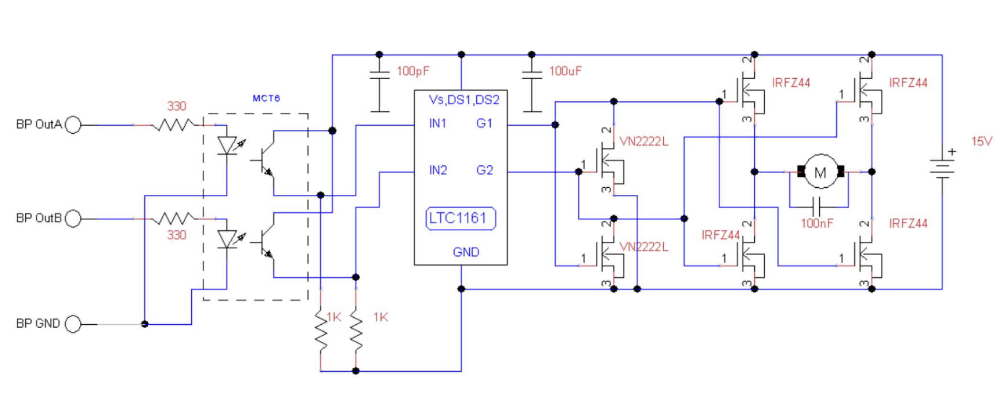
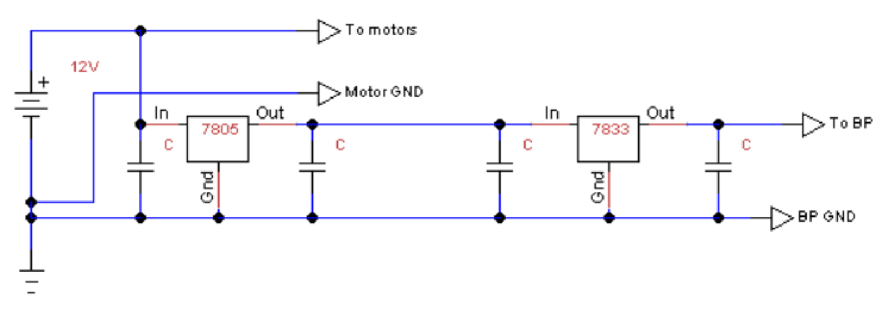

Welcome! I am an Engineering Physics student at the University of British Columbia. My interest is in the combination of electro-mechanical and software engineering and its applications in robotics and space exploration. When I'm not studying, you can find me building contraptions in my little electronics workstation, programming my latest software project, and playing (or making) videogames. During the summers I enjoy long hikes and kayak trips through the wilderness of BC.
Work Experience
Technical Projects
Rocket Simualtion
Ongoing project: creating a rocket simulation with orbital mechanics in Unity.
Can Retrieval Robot (Summer 2021)
Links
Skills
Summary
I collaborated with three other students to design, assemble and test four robots that autonomously navigate on a tape path, collect cans, and drop them off in a silo. The robot chasse was constructed out of corrugated plastic and mounted onto two motors and a caster. Power was supplied by a 12V lithium ion battery and regulated to other components ; electronics were soldered onto protoboards. The firmware was written in C, C++ and Arduino framework and ran on a BluePill board with an STM32 microprocessor. Navigation was accomplished by two infrared sensors and a PID control algorithm. A sonar and a series of servo motors with corrugated plastic arms were used to detect, pickup, and drop-off any cans that the robot detected. Our robots tied for first place in a competition with 15 other teams in which can arrangements were randomized and the robots had to complete an 8ft x 8ft circuit in 1 minute.
My Contribution
- Electrical design; designed and assembled h-bridge motor drivers, sensor, processing, and power management electrical circuits
- Tested circuits with oscilloscope, optimized circuit flaws, and drafted final designs
- Firmware programming and debugging for STM32 MCU with C++ and Arduino framework; wrote code for state machine, start-up sequence, navigation, motor PWM control, sensor communications, can disposal, and telemetry GUI
- Improved PID motor control algorithm for navigation by implementing smooth error mapping from IR tape sensor readings
- Developed simulation in python to predict robot performance
- Implemented wireless communication system to efficiently tune robot parameters
Project Overview
This project was done in an engineering project course during the summer of 2021 - in the midst of the pandemic. The fact that the course was online limited the materials and tools at our disposal, and teamwork. Due to some students residing outside of the country, each student was required to build a robot which resulted in my team designing one robot and replicating it four times.
The assessment of the course included a design presentation, a timed trial, and the final competition. Following a "Mars Retrieval" theme in light of the recent rover launch, the competition required the robot to descend into an arena with a sky crane and pickup a samples (cans) and deposit them in a return rocket (card-board silo). The time-limit was 1 minute and the can arrangement was randomized. My team opted to line the arena with a tape path for the robot to follow that maximized the robot's chance to encounter a can.

Figure. Competition surface.
Planning and Simulation
During the planning phase, in order to help quantify design decisions, I programmed python code that simulates, in 2D coordinates, several robot traversal paths as well as the randomized can arrangements. Through this simulation, we acquired a rough estimate of the time it would take to traverse certain paths, and which traversal technique would be more effective. We can to the conclusion that a robot following a pre-determined path, and detecting cans in local proximity would be a better option than long ranged detection. We called this the 'sweep' method.

Figure. Snippet of python simulation output in Jupyter notebook.
Mechanical Design
The mechanical design of the robot consisted of a chasse capable of storing 6 cans horizontally, the cans are stored until it is time to drop them off. The cans are detected with a sonar, collected with an actuated arm, and are lifted to the storage location through another arm; the arms are rotated with servo motors. There are 2 rows of can storage, storing 3 cans each, and directed by an actuated gate at the top.

Figure. Robot CAD, created in OnShape by a team member.
Electrical Design
The electronic components of the robot consisted of sensory electronics, motors, a small telemetry display, a BluePill board with an STM32 MCU, and 12 and 9 volt lithium ion batteries. The final design of the robot consisted of three separate circuits, designed by me and soldered with the help of teammates. The main circuit contained the microprocessor and all the sensor and motor IO. The h-bridge motor circuits which provided robust control of both speed and direction of the geared motors was another circuit. The final board contained two isolated circuits powering and relaying signals for the servo motor and tape sensors.
Technical issues encountered included interference from the motors, which was solved by adding optocouplers to electrically separate the signal output of the microcontroller from the h-bridge. The h-bridge was also surrounded by a grounded metal foil box once all the systems were assembled. The sensory signals were connected by multi-core shielded wiring as they were very susceptible to noise. I frequently encountered electrical components or circuits that did not function - frequent testing with a multimeter and oscilloscope saved a lot of time when constructing the circuit.

Figure . Completed circuits wired and mounted on robot base (without top chasse). H-bridge (left), processing (middle), servo and tape sensor (right).


Figure. H-Bridge (top) and power regulator (bottom) circuit schematics.
Software Design
My contributions included programming the firmware for the robot’s STM32 microcontroller in C++ and Arduino framework. I wrote the code for a start-up sequence of 7 subsystems and the main state machine for the robot’s navigation and can disposal system. Other firmware includes code to drive motors, servo-motor, read from sonars and tape sensors, and run an on-board display.
One issue my team encountered was constantly reuploading code to tune the parameters of a PID control navigation algorithm. To solve this issue, I implemented code for wireless communications that used an IR remote and receiver. In addition, I designed a GUI settings system to work on small on-board display. Because of this, we were able to save time by tuning robot parameters without the need to reupload code.
Figure. Settings menu for parameter tuning with wireless remote.
Another technical challenge my team encountered was lack of stability in our PID control algorithm. This algorithm processed tape (IR reflectance) sensor readings into motor direction and PWM parameters to keep the robot navigating on a tape path. I was able to drastically increase the stability of the robot by implementing an improved error mapping function. This method took advantage of analog readings and the range of view of the tape sensors which were able to give useful error variation data while the robot was still on the path. By adjusting the resolution of the algorithm, the robot PID control could have smaller and smoother error steps, leading to increased stability at the cost of reduced speed.
AI Virtual World
A virtual world AI simulation with 2D pixel-art developed in Java.
Robotic Claw
A semi-autonomous robotic claw designed to pickup items of different sizes.